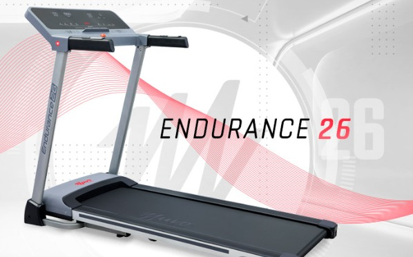
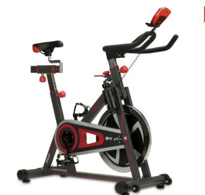
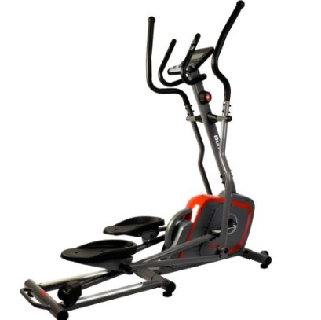

|  |
TrotadoraPrecio:$ 389990La nueva Endurance 26 ejercita todo tu tren inferior y te permite realizar un trabajo aeróbico en la privacidad y comodidad de tu hogar. Podrás llevar el registro de distancia, tiempo, velocidad, pulso, calorías y body fat de tus rutinas en un panel LED estilizado y completamente renovado. Su banda de trote de 45x130 cm, 15 programas de entrenamiento predefinidos y sistema de inclinación manual de 3 niveles, te aseguran un ejercicio cómodo, seguro y flexible. En esta trotadora podrás entrenar hasta 7 horas a la semana, durante 60 minutos continuos 1 vez al día, a una velocidad máxima de 14 Km/h, ¡ideal para los principiantes que quieren usarla todos los días! |
|  |
Bicicleta EstaticaPrecio:$ 198990Lleva la energía, motivación y resultados de una clase de Spinning a la seguridad y comodidad de tu hogar. Muvo Beat 36 es la bicicleta de Spinning más vendida y popular de Muvo Fitness. Con su disco de inercia de 18 kilos y transmisión por cadena, Beat 36 es una verdadera bicicleta de Spinning: firme, cómoda y de una construcción 100% confiable, con un peso total de 41 KG lo que asegura la estabilidad de la máquina, algo elemental en esta disciplina. Además, ¿qué otra marca te da garantía de por vida en su marco? ¡Solo Muvo Fitness! Podrás también ajustar vertical y horizontalmente su sillín para máxima adaptabilidad a tu cuerpo. Beat 36 también cuenta con un pequeño y sencillo computador para registrar tus rutinas. Pon a prueba su sistema de tensión por fricción ¡y trabaja al ritmo de tu música favorita todo tu tren inferior! |
|  |
ElipticaPrecio: $ 369990Con la Elíptica Burn 60 podrás lograr todas tus metas y mantener un estilo de vida saludable desde la comodidad de tu hogar. Realizar actividad física es muy importante para tu salud y para mantener un cuerpo deportivo, con nuestra Burn 60 podrás realizar tus rutinas de ejercicio cuando quieras y de forma muy segura. Esta elíptica está diseñada en acero y PVC. Su sistema de resistencia magnética y sus 8 niveles de resistencia con ajuste manual te permitirán una gran variedad de rutinas. El peso de este producto es de 55 kilos aproximadamente, y sus dimensiones son 170 cm de alto, 154 cm de largo y 67 cm de ancho. |